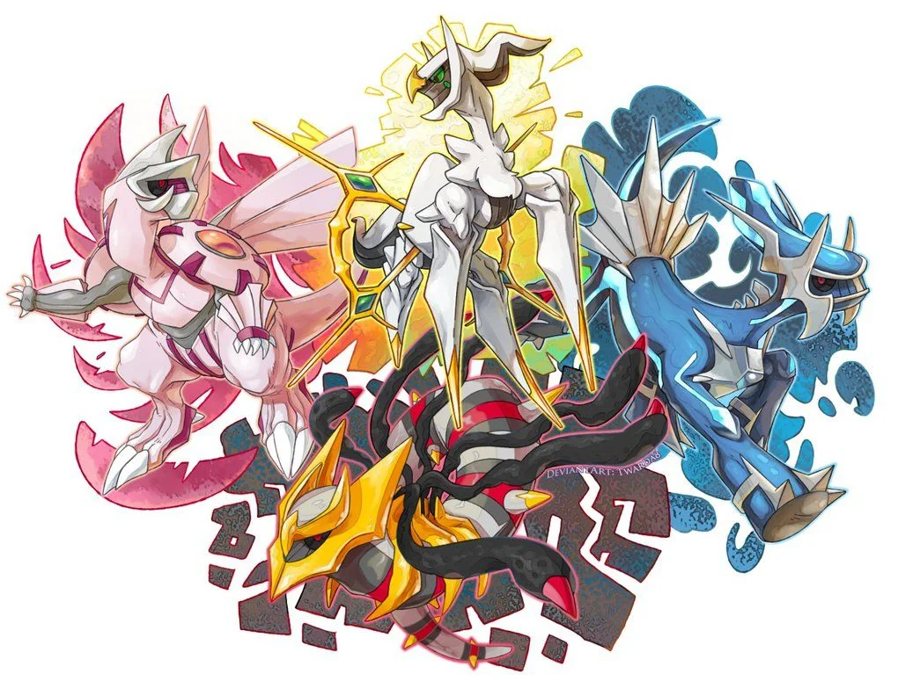

The Creation Trio are a group of three Legendary Pokemon from the Sinnoh region: Dialga, Palkia, and Giratina. They are the game mascots of three Generation IV Sinnoh games Pokemon Diamond, Pearl, and Platinum, and two of them are the mascots of the remakes Pokemon Brilliant Diamond and Shining Pearl. All three members of the trio have two distinct formes. Their primary forme, which for Giratina is called its Altered Forme, is a forme the trio assumes when outside their home dimension, so is the forme that humans are most familiar with. The Origin Forme, on the other hand, is considered to be their true forme at their full power, which they transform into through the use of a special item. Giratina also transforms into its Origin Forme when it is in the Distortion World.
According to the legends of Sinnoh, Dialga, Palkia, and Giratina were simultaneously created by Arceus when the universe began at the Temple of Sinnoh. At the time they were born in their Origin Formes. Dialga and Palkia were given control over an element of reality (time and space respectively) while Giratina was banished to the Distortion World for its violent nature. The lake guardians were then created to help control and calm Dialga or Palkia should they be enraged.
During the ancient times of Hisui, the Celestica worshiped Arceus and the trio, with statues in their honor. The statues were made based on their primary formes when the trio first appeared to the humans living there; however, Giratina's statue was destroyed after its banishment, and people tried to cover up its existence. Years later, both Dialga and Palkia were seen by the respective leaders of both the Diamond and Pearl Clans, believing this was the "almighty Sinnoh" - the former residents, the Celestica, worshiped Dialga and Palkia instead of Arceus. However, both clans accused the other of worshiping a false god, which lead to a bitter quarrel until both sides lacked enough manpower, leading to an uneasy truce.
Eventually, Giratina sought vengeance against Arceus and opened space-time rifts on top of Mount Coronet. These rifts drove Dialga and Palkia berserk and caused havoc across Hisui. It even brought some humans from the future into the past. One of these humans helped resolve the incident with help of Lake Guardians, and bring an end to conflict with the Diamond and Pearl Clan. The same human also bested Giratina and convinced it to protect the world instead of destroy it. Each member of the trio has control over a different element of reality. Dialga controls time and Palkia controls space. Giratina has control over antimatter and the Distortion World, where time does not flow and space is unstable.
